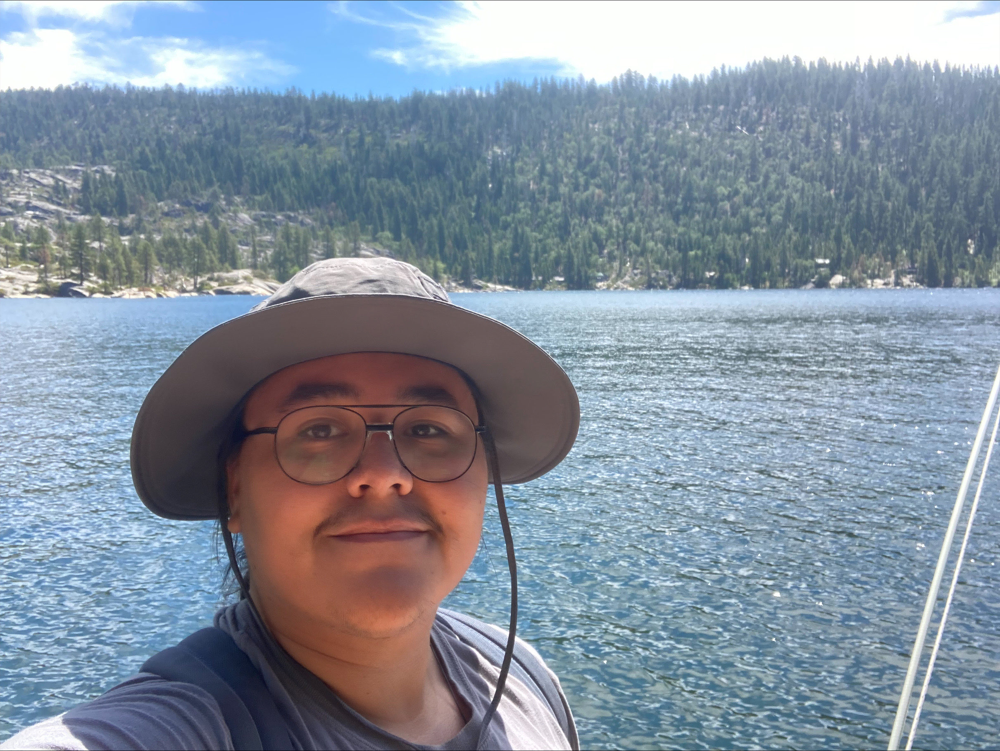

|  |
Rodolfo Galvan NuñezUndergraduate studentMajor: Computer Science & Engineering (CSE) School of Engineering Minor: Applied Mathematics School of Natural Sciences University of California, Merced Email: rnunez28@ucmerced.edu Social: LinkedIn |
I am currently a senior undergraduate student majoring in CSE & minoring in Applied Math at the University of California, Merced. I have interests in Robotics, Embedded Systems, Machine Learning, Controls, Optimization, & Signal Processing. Once I am finished with my time as an undergraduate I plan to pursue graduate studies in order to further these interests!